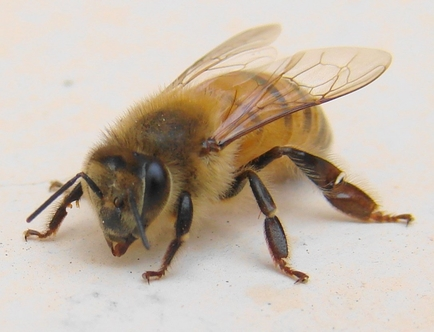

Les titres : ceci est un titre de niveau 1
Ceci est un titre de niveau 2
Ceci est un autre titre de niveau 2
Balises
La double balise "p" et "/p" délimite un paragraphe
Retout à la ligne c'est la balise orpheline "br"
Mettre en valeur du texte
la balise "em" (en fait c'est de l'italique) et aussi la balise "strong" (c'est en gras) ou encore la balise "mark" qui est du surlignage
En fait ce sera la partie CSS qui décidera comment va s'afficher mon texte entre les différentes balises.
Je pourrai même décider d'afficher le texte qui est entre balises strong en italique !! C'est DINGUE !!
Listes à puces
- Puce 1
- Puce 2
- Puce 3
Listes numérotées
- Numéro 1
- Numéro 2
- Numéro 3
Les liens
Les liens vers des sites
Pour remplacer le moteur de recherche google y'a l'embarras du choix !
Qwant le moteur de recherche français réputé sans pistage
Ecosia pour planter des arbres
Framabee de framasoft
Duckduckgo "Le moteur de recherche qui ne vous espionne pas", mais hébergé par Amazon Web Services
Lilo pour financer des projets sociaux et écologique
Les liens vers une page perso en local
Voici des liens à aller voir absolument ;-)
cliques là !Les liens pour envoyer un courriel
Les liens pour télécharger un fichier
Les images
Insertion d'une image

{kind=link}
Les polices
Il existe différents types de formats de fichiers de polices qui existent et qu'il faut connaître :
- .ttf: TrueType Font. Fonctionne sur IE9 et tous les autres navigateurs
- .eot: Embedded OpenType. Fonctionne sur Internet Explorer uniquement, toutes versions. Ce format est propriétaire, produit par Microsoft
- .otf: OpenType Font. Ne fonctionne pas sur Internet Explorer
- .svg: SVG Font. Le seul format reconnu sur les iPhones et iPads pour le moment
- .woff: Web Open Font Format. Nouveau format conçu pour le Web, qui fonctionne sur IE9 et tous les autres navigateur
Voici une liste de polices qui fonctionnent bien sur la plupart des navigateurs :
Arial
Dans ce monde il y a deux ordres d'existence,
le périssable et l'impérissable.
Le périssable est le visible.
L'impérissable est la substance invisible du visible.
Bhagavad-Gita (vers 400-300 av. J.-C.)
Arial Black
Dans ce monde il y a deux ordres d'existence,
le périssable et l'impérissable.
Le périssable est le visible.
L'impérissable est la substance invisible du visible.
Bhagavad-Gita (vers 400-300 av. J.-C.)
Comic Sans MS
Dans ce monde il y a deux ordres d'existence,
le périssable et l'impérissable.
Le périssable est le visible.
L'impérissable est la substance invisible du visible.
Bhagavad-Gita (vers 400-300 av. J.-C.)
Courier New
Dans ce monde il y a deux ordres d'existence,
le périssable et l'impérissable.
Le périssable est le visible.
L'impérissable est la substance invisible du visible.
Bhagavad-Gita (vers 400-300 av. J.-C.)
Georgia
Dans ce monde il y a deux ordres d'existence,
le périssable et l'impérissable.
Le périssable est le visible.
L'impérissable est la substance invisible du visible.
Bhagavad-Gita (vers 400-300 av. J.-C.)
Impact
Dans ce monde il y a deux ordres d'existence,
le périssable et l'impérissable.
Le périssable est le visible.
L'impérissable est la substance invisible du visible.
Bhagavad-Gita (vers 400-300 av. J.-C.)
Times New Roman
Dans ce monde il y a deux ordres d'existence,
le périssable et l'impérissable.
Le périssable est le visible.
L'impérissable est la substance invisible du visible.
Bhagavad-Gita (vers 400-300 av. J.-C.)
Trebuchet MS
Dans ce monde il y a deux ordres d'existence,
le périssable et l'impérissable.
Le périssable est le visible.
L'impérissable est la substance invisible du visible.
Bhagavad-Gita (vers 400-300 av. J.-C.)
Verdana
Dans ce monde il y a deux ordres d'existence,
le périssable et l'impérissable.
Le périssable est le visible.
L'impérissable est la substance invisible du visible.
Bhagavad-Gita (vers 400-300 av. J.-C.)